HW2
Maps, user flows, and photos
There are 3 staircases and no other way between floors. But with my back hurt, the stuff that bothered me most was the heavy front door, the missing address, and how the bathrooms are split up.
Hand-drawn maps
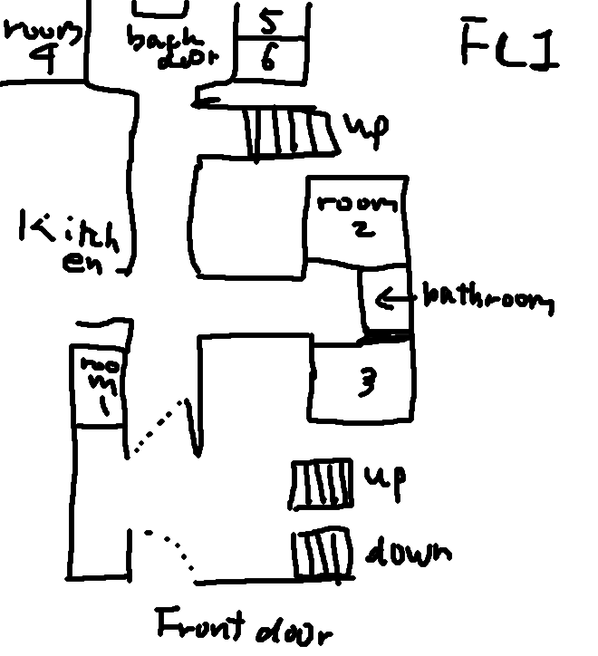
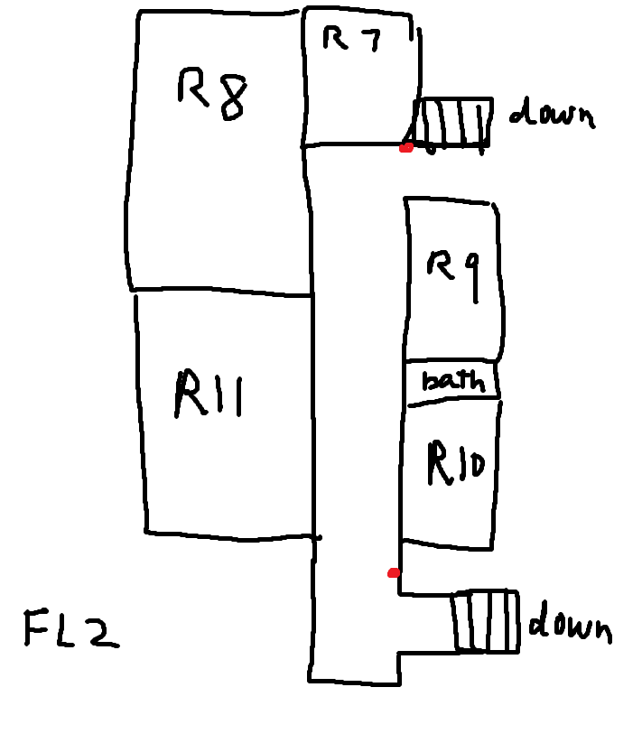
Ground floor + basement, labeled
Second floor, labeled
User flows
| Flow | Steps | Hardest point |
|---|---|---|
| Coming home to room 11 | Motion light comes on, push the front door, turn right, up stair A, down the hall to my room | The front door. The closer pushes back the whole way. |
| A visitor or delivery | Get to the front, look for a number, walk around back, find the paper address by the mail | No address at the front. No way to tell it's the right house. |
| Rooms 1 to 6 need a bathroom | Leave the room, hallway, shared WC between rooms 2 and 3, wait if someone's in there | One toilet for six rooms. |
| Going to campus | Front door again, motion light (at night), dark street, 15+ minute walk | The walk itself. I can't do it right now, and at night the street is dark past the doorstep. |
Photos
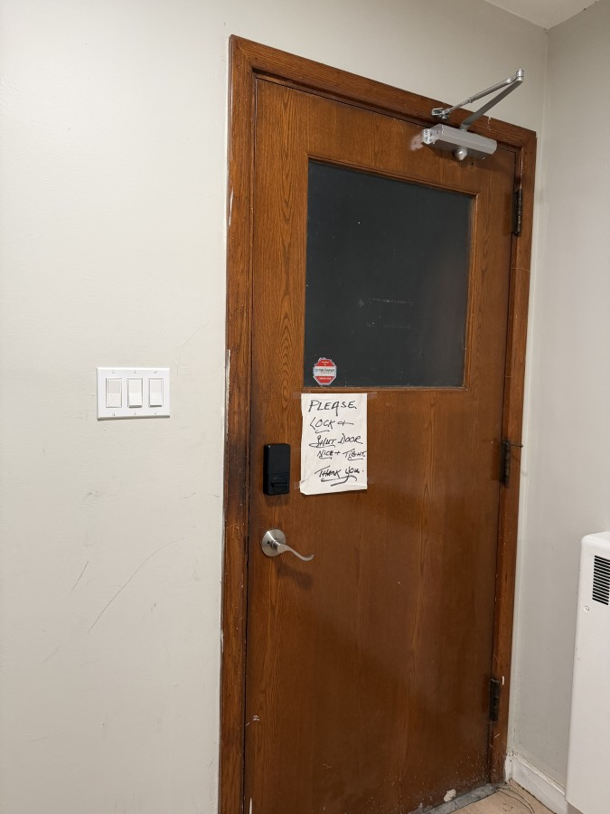
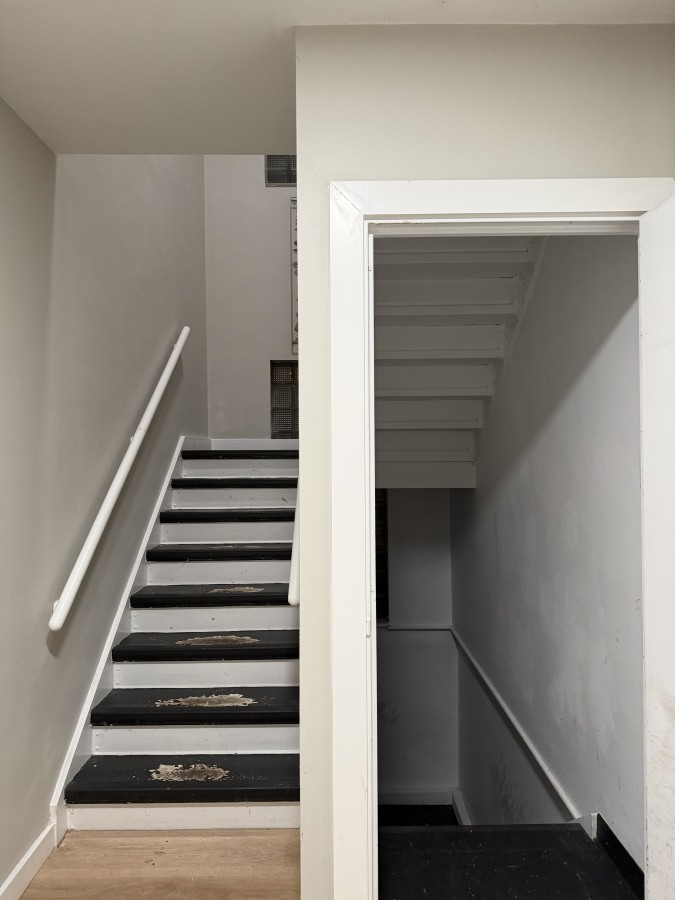
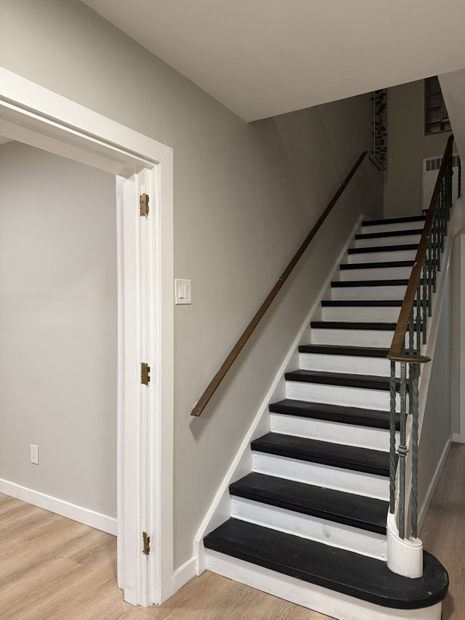
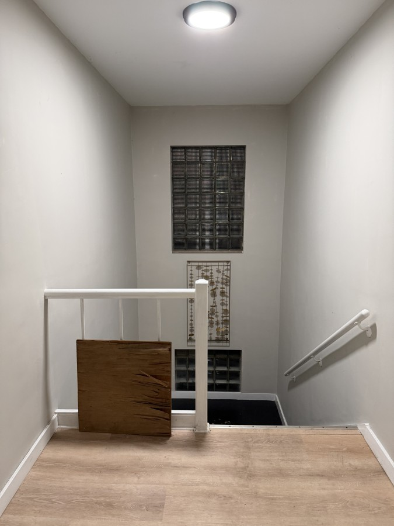
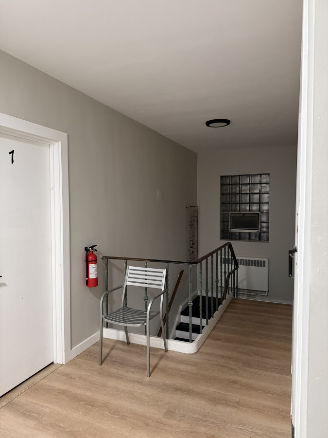
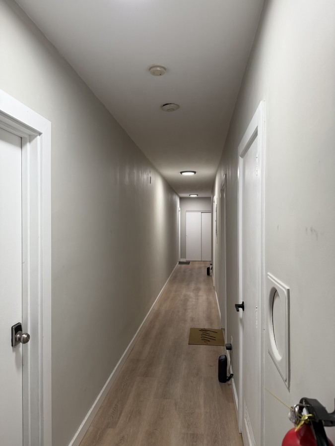
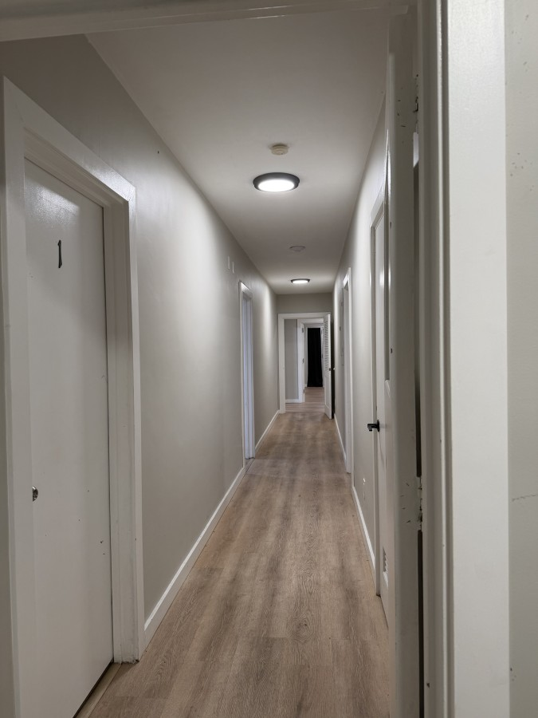
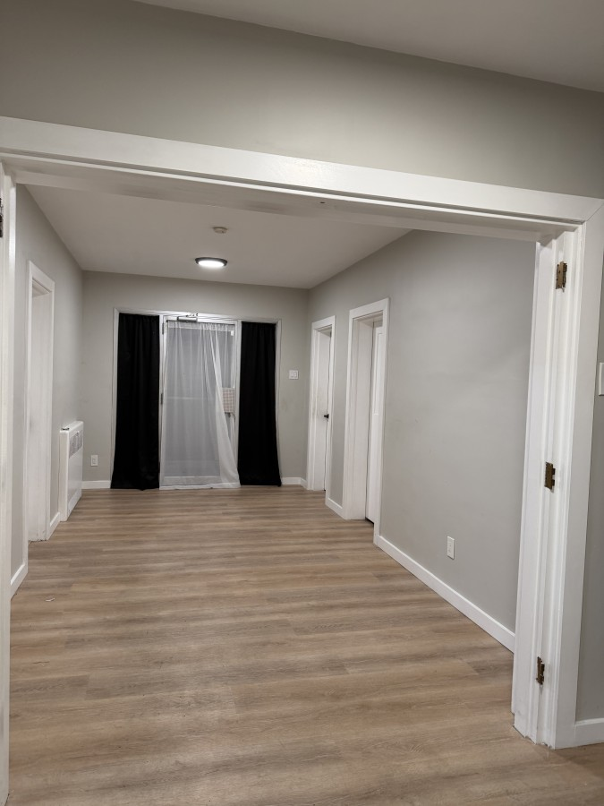
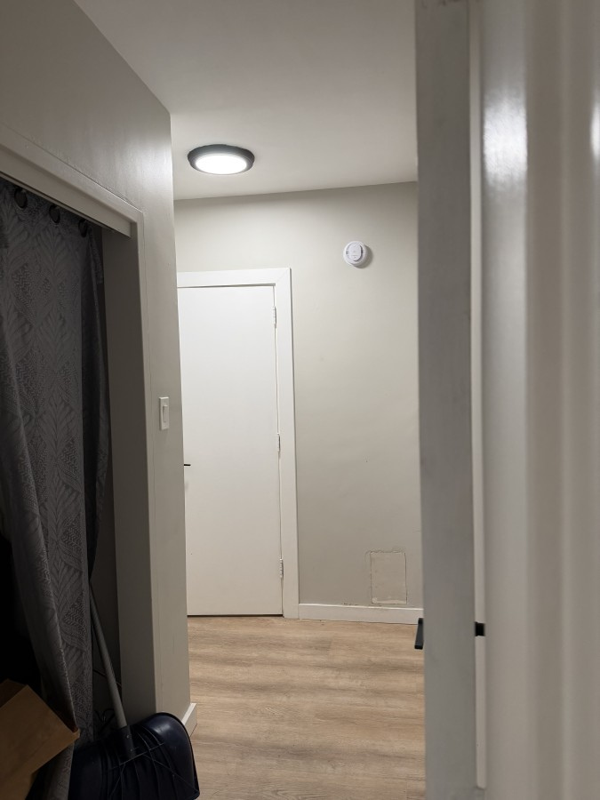
Stuff I couldn't take a picture of because it's not there: a house number out front, a way between floors without stairs, streetlights on my block.
HW2
Reflection
The space
In HW1 I picked Folsom, West Hall, and the Union. But then I hurt my back right before the mapping workshop, and walking to campus (it's 15+ min from my house) wasn't going to happen. So my space ended up being where I live, a shared house off campus. No group members, I couldn't make it to the workshop so I did this alone. The house has a ground floor, a basement, and a second floor. Rooms 1 to 6 are downstairs, 7 to 11 upstairs, I'm in 11.
Something I found out later: the house was built in the late 1800s and the property records list it as "SCHOOL, CHURCH." So I'm guessing it wasn't built to be a house, which would explain the numbered rooms and the really heavy front door.
Kind of funny, in HW1 I said I wanted to look at spaces when something is "temporarily out of order." Didn't think that would be my back.
What I started with
I used my HW1 guiding questions as my criteria. Can you find the door and know it's the right place without asking? How do you get between floors, is there anything besides stairs? Where are the bathrooms and who gets to use them? Who is this place made for? What are the unwritten rules? Then I walked the routes I actually use every day (front door to my room, room to bathroom, down to the basement), took pictures, and wrote down what each spot made me do, like push a door, grab a rail, or stop and rest.
Evidence
Mostly I just counted things. Stairs, handrails, bathrooms, doors with closers. My back was the other measuring tool, like where did it hurt and where did I have to stop. I also looked for any info the building gives you, an address, signs, anything (not much). I'd say the house is a medium. You can't get between floors without stairs, but every staircase has a handrail on both sides and that's the only reason I can still use them.
What I found
The front door is the worst part. It has a closer at the top, a keypad lock, and a handwritten sign that says to lock it and shut it "nice + tight." The closer makes it really heavy and pushing it hurts almost every time. From the sign you can tell the house expects everyone to be able to pull it shut hard.
There's no address on the front. It's on a piece of paper by the back door where the mail comes in. So a visitor or a delivery driver at the front can't really tell if it's the right house. Same for an ambulance, which is a little scary.
There are 3 staircases. Right when you walk in the front door, stair A is on the right going up (that's how I get to my room) and stair B next to it goes down to the basement. If you go straight down the hall, stair C is on the right and goes up too, it ends by room 7. The steps are worn and the paint is peeling. At the top of stair A there's a gap in the railing that someone just covered with a piece of plywood. There's also a random metal chair at the top of stair C. No idea why it's there but you could rest on it.
The bathrooms are not spread out evenly. Downstairs, rooms 1 to 6 all share one all-gender bathroom (between rooms 2 and 3). Upstairs, rooms 7, 8, and 11 have their own and 9 and 10 share one. So whether you have to walk down a hall to use the bathroom depends on which room you pay for. I have my own and it made being hurt a lot easier.
Outside, there's a motion light over the front door at night. It helps right at the door but that's it, the street is dark and I don't like walking it alone. Right now with my back I can't walk to campus at all. Even after it heals, nights are going to be hard unless I'm with someone.
Getting around isn't all bad though. Hoosick Road is about 7 minutes away and has grocery stores, a gas station, and a bus stop. So the house is close to stuff. It's just that 7 minutes is still 7 minutes when your back hurts, and I'd still need to check if a bus from there even gets me near campus.
Surprises and frustrations
I really thought the stairs would be the biggest problem but they weren't, because of the handrails. It was the door. The door closer is the thing I walk past every day and never noticed before this. The accessibility feature I use that's not really meant for me is the second handrail. I used to hold one side, now I hold both. The annoying part was missing the group workshop. Once getting to campus got hard, being part of class got hard too.
Where the good stuff is
Even inside one house the good stuff is bunched up. The private bathrooms come with certain rooms, and those probably cost more, so some of the access here is paid for in rent. Campus is the same thing, just bigger. Students who live farther away (usually because it's cheaper) spend more time and energy just getting to class, and if something happens to their body the distance can cut them off.
If I could redesign it
Small stuff first. Fix or replace the door closer so it doesn't take so much force, put a house number on the front, and put a real railing where the plywood is. Outside, more lights on the way to campus, and some kind of shuttle or safe-ride that actually comes out this far.
HW2
Field notes
Criteria
- Entrances clearly marked and findable without asking
- Moving between floors: stairs or alternatives, and who uses which
- Restrooms: how many, shared or private, all-gender, where
- Who the space is designed around and who works around it
- Unwritten rules and how a newcomer would learn them
Notes
- hurt my back, can't go to the group workshop or walk to campus. mapping my house instead, alone
- overall: medium. stairs only, but handrails on both sides
- front door, turn right: stairs up (A, my way up) + stairs down to basement (B). straight in then right: another staircase up (C)
- worn treads, peeling paint, plywood on one railing
- chair at the top of stair C by room 7, could be a rest spot?
- no sign at the front. address only on paper at the back door where mail comes in
- front door heavy: overhead closer, keypad, lever handle, handwritten "shut tight" sign. hard to push w/ back pain
- bathrooms: 1 shared all-gender downstairs (between 2 + 3). 2F: one between 9 and 10. private in 7, 8, 11 (mine)
- night: motion light at front door. street dark, scary alone
- 15+ min walk to RPI. not accessible to me right now
- hoosick rd ~7 min away: grocery stores, gas station, bus stop
- house built late 1800s. property records say "SCHOOL, CHURCH"
HW3
Modified maps
For HW3 I picked 3 things from HW2 (the front door, the stairs and bathrooms, and the walk to campus) and mapped them 3 more ways: a plan with layers, the house rearranged by how far things feel, and one day played like a short video.
Map 1: three items on the plan
Detail: the front door up close
Map 2: how far things feel from my room
I'm in the middle. Everything else is placed by how hard it is to get to from my room right now, not where it really is. My bathroom is right next to me. The front door is only one staircase away but it ends up in "hurts." Campus doesn't even fit.
Map 3: one day, room to RPI
A short video of a day while my back is hurt. I try to walk from my room to RPI, it doesn't work out right now, so I go back, and then it gets dark.
Press play.
HW3
Three items and design responses
The front door and the missing address
The closer and the keypad keep the house locked and warm. The sign makes "shut it hard" everyone's job. And since there's no number on the front, only the mail carrier at the back really knows which house this is.
Set the closer so it takes less force, or add a push button opener. Put a house number with a light by the front door (it could use the motion light that's already there). And get a latch that closes by itself so the door doesn't need a hard pull.
Stairs, railings, and bathrooms
3 staircases, 3 floors, no way around the stairs. The handrails are why I can still use stair A. Some rooms come with their own bathroom and everyone else walks down the hall.
Replace the plywood with a real railing, fix the steps, and paint the step edges a different color so they're easier to see. Put a seat at the top of stair A on purpose (there's already a random chair by stair C). And let people switch to a room with a bathroom, or a ground floor room, while they're hurt.
The walk to campus
The 15 min walk decides if I get to campus at all, and right now the answer is no. At night the dark street decides it even on a good day. The motion light only covers the doorstep.
Map 3 shows the walk over a day, where it breaks and how it changes when it gets dark. For a fix: lights along the way, and a shuttle or safe-ride stop that actually reaches houses out here. There's already a bus stop on Hoosick Road about 7 min away, so maybe part of the fix is just making sure a bus from there goes to campus.
HW3
Written response
Why I mapped it this way
For HW3 I wanted to map the house in a way a normal floor plan can't. On a floor plan my front door and my bedroom door look the same. But one of them hurts to open and one doesn't. The plan also doesn't show that the stairs are only okay because of the handrails, or that the street is scary at night. So I made maps about pain, bathrooms, and being scared instead. I got the idea from Counter Mapping, the video we watched where Zuni artists make maps of their land based on what it means to them, instead of the lines other people drew. My house is way smaller than that obviously, but I liked the idea that the person living there gets to decide what goes on the map.
Map 2 and Map 3 are the ones I like the most. In Map 2 my bathroom is right next to me and campus doesn't even fit, which is how the last few weeks felt. Map 3 is there because the street in the morning and the street at night feel like two different places, and I couldn't show that in one picture.
Why the house is like this
So why is my house like this? Part of it is the law. The ADA mostly covers public places like stores and schools, not houses people rent. The Fair Housing Act says new apartment buildings have to be accessible, but only ones built after 1991. My house is from the late 1800s, so none of that applies. If a tenant needs something changed they can ask the landlord, but they usually have to pay for it themselves. So if you're disabled and you live in an old house, it's pretty much on you.
Also, the property records say "SCHOOL, CHURCH." That surprised me. It means the house probably wasn't even built for people to live in, which might be why the front door is so heavy, why the rooms have numbers, and why the bathrooms are all over the place. Someone turned it into housing but didn't really change it for the people living here now.
Money, RPI, and getting around
Money is a big part of it too. Old houses in Troy get patched up instead of fixed, like the plywood on my railing. I don't think a landlord has much reason to fix the door or add a ramp if the next person moving in will probably be another college student with no disability. And if the house only works for people like that, then only people like that move in, so nobody ever asks for it to change.
I think this connects to RPI too. A lot of upperclassmen live off campus in old houses like mine, and the farther away you live the cheaper it usually is. So if you don't have a lot of money you end up farther away, and you pay with time and energy instead. If you get hurt, or you're disabled, you can lose campus really fast, like I did. I feel like this could make some people not want to come to RPI at all. If you use a wheelchair you have to worry about the classrooms, but you also have to worry about whether you can even find a cheap place to live that you can get into.
Buses are kind of a weird one. There's a bus stop on Hoosick Road about 7 minutes from my house, plus stores and a gas station. So on paper I live close to a lot. But that only works if you can walk 7 minutes, and right now I can't really.
Who the house is made for
In the intro of Building Access, Hamraie talks about the "normate template," which is the "normal" body that buildings are made for. My house is made for that body. The sign on the door expects you to pull it hard, the stairs expect you to climb, and the address being in the back only makes sense if the only stranger coming is the mail person. People also think of student houses as places for young healthy people who are only there for a year or two, so nobody thinks about accessibility. I never thought about any of this until I hurt my back.
How it makes me act and feel
The house changes how I act and how I feel. The handrails are the reason I can still live upstairs. Having my own bathroom means I don't have to walk down the hall at night. The heavy door makes going out start with the most painful part, and the dark street makes me scared, so I mostly stay in at night. I also missed the group workshop, so I missed what everyone else learned there. Something wrong with my house ended up messing with school too.
The good parts (sort of)
The assignment asked how we could map joy, and that was hard for me. I couldn't think of a really happy memory here. The closest thing is relief, like getting back to my room and my bathroom being right there, or holding both handrails and the stairs being okay, or the light turning on at the door when it's dark. That's why my bathroom is the green dot next to me on Map 2. I guess right now the good moments are just when things stop hurting.
Most of what I found is small stuff, like the door closer or the missing house number. I don't think anyone would notice it on their own, and that's probably why nobody has fixed it.
Works cited
Americans with Disabilities Act of 1990, Title III, 42 U.S.C. § 12181 et seq.
Anti-Eviction Mapping Project. antievictionmap.com.
Counter Cartographies Collective. countercartographies.org.
Fair Housing Act, 42 U.S.C. § 3604(f). U.S. Department of Housing and Urban Development, Fair Housing Act Design Manual.
Hamraie, Aimi. Building Access: Universal Design and the Politics of Disability. University of Minnesota Press, 2017.
Loften, Adam, and Emmanuel Vaughan-Lee, directors. Counter Mapping. Emergence Magazine, 2018. emergencemagazine.org.
This Is Not an Atlas. notanatlas.org.